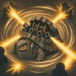

Rundumfeuer
Feuert seine Kanone 6-mal ab: zuerst in seine Blickrichtung, danach jeweils eine Richtung weiter gegen den Uhrzeigersinn. Jedes Geschoss fügt dem ersten Gegner, der in dieser Richtung höchstens 2 Felder entfernt ist, physischen Schaden in Höhe von 500% der Angriffskraft zu. Zwischen zwei Geschossen liegen 0,5 Sek.; dieses Intervall ändert sich mit dem Angriffstempo. Bewegt sich beim Feuern nicht. Wird es betäubt oder eingefroren, feuert es die restlichen Geschosse nicht mehr ab. Erhält kein Mana, bis der Beschuss vorbei ist.